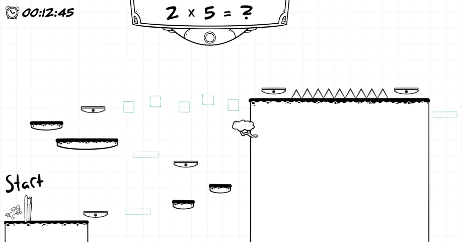

Running Math
About the project
Completely solo project (2020). I can't recall exactly, but this project took around 60h of work(?). All assets, audio and programming is my work. This was my second Unity project, so there was a lot of learning involved.
You play as math dude who is obsessed about platforming and solving simple one digit addition and multiplication calculations. We did a game testing team project later on for the game, evaluating its usability, visual heurestics and code. This was part of a software testing course.
The prototype contains a single level and the platforming is not very fluid. I was mainly focusing on the graphics. It's still a fun little game.
The game is downloadable from my Google Drive (PC and Mac). You can also find the game project repository from my GitHub page.